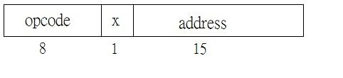

sic的instruction解碼時，前8個bit為opration，中間X為index，後15個bit為之後要做的address。以003600(16進位)為例，00(前8bit)對應到LDA這個instration，index為0，做的是將後15bit address (Target Address)裡面的值load到暫存器A裡面。
假如index X為1，那麼TA為後15bit值在加上X暫存器裡的值，在進行LDA的動作。
SIC/XE的instruction格式有4種，分別為1個BYTE到4個BYTE：
| opcode |
| opcode | register 1 | register 2 |
| opcode | n | i | x | b | p | e | disp |
| opcode | n | i | x | b | p | e | address |
後兩種格式就差在最後address部分，差了一個byte。區分這兩種格式判斷在e這個bit，如果為0就代表format3，為1就代表format4。
前六bit為opcode，X(index register)、B、P(program counter)三個都是暫存器，當哪格為1時TA就要加上該格暫存器的值。ni是決定TA產生的方式，當ni為00時，會將整個instruction當成SIC模式來處理，當ni為11時，SIC就會去讀TA裡面的值來做事情，當ni為10時，是將TA這位置裡面的值當成address，再去這個address裡抓值來運作，當ni為01時，TA本身就當成值來運作。
以課本11頁為例子：